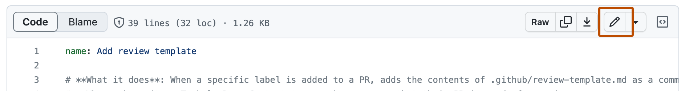
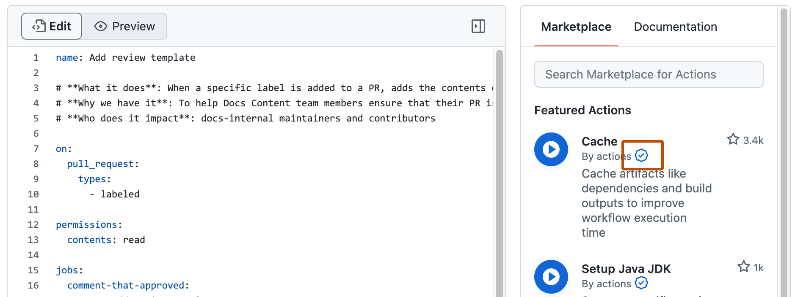
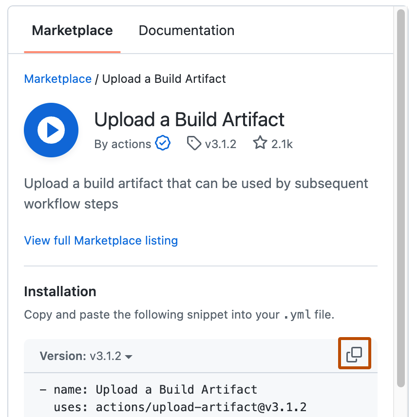

You can use and customize pre-written actions to power your workflow.
You can search and browse actions directly in your repository's workflow editor. From the sidebar, you can search for a specific action, view featured actions, and browse featured categories. You can also view the number of stars an action has received from the GitHub community.


You can add an action to your workflow by referencing the action in your workflow file. The actions you use in your workflow can be defined in:
You can view the actions referenced in your GitHub Actions workflows as dependencies in the dependency graph of the repository containing your workflows. For more information, see “About the dependency graph.”
Note
To enhance security, GitHub Actions does not support redirects for actions or reusable workflows. This means that when the owner, name of an action's repository, or name of an action is changed, any workflows using that action with the previous name will fail.
An action's listing page includes the action's version and the workflow syntax required to use the action. To keep your workflow stable even when updates are made to an action, you can reference the version of the action to use by specifying the Git or Docker tag number in your workflow file.

You can also enable Dependabot version updates for the actions that you add to your workflow. For more information, see Keeping your actions up to date with Dependabot.
If an action is defined in the same repository where your workflow file uses the action, you can reference the action with either the {owner}/{repo}@{ref} or ./path/to/dir syntax in your workflow file.
Example repository file structure:
|-- hello-world (repository)
| |__ .github
| └── workflows
| └── my-first-workflow.yml
| └── actions
| |__ hello-world-action
| └── action.yml
The path is relative (./) to the default working directory (github.workspace, $GITHUB_WORKSPACE). If the action checks out the repository to a location different than the workflow, the relative path used for local actions must be updated.
Example workflow file:
jobs:
my_first_job:
runs-on: ubuntu-latest
steps:
# This step checks out a copy of your repository.
- name: My first step - check out repository
uses: actions/checkout@v6
# This step references the directory that contains the action.
- name: Use local hello-world-action
uses: ./.github/actions/hello-world-action
The action.yml file is used to provide metadata for the action. Learn about the content of this file in Metadata syntax reference.
If an action is defined in a different repository than your workflow file, you can reference the action with the {owner}/{repo}@{ref} syntax in your workflow file.
The action must be stored in a public repository.
jobs:
my_first_job:
steps:
- name: My first step
uses: actions/setup-node@v4
If an action is defined in a published Docker container image on Docker Hub, you must reference the action with the docker://{image}:{tag} syntax in your workflow file. To protect your code and data, we strongly recommend you verify the integrity of the Docker container image from Docker Hub before using it in your workflow.
jobs:
my_first_job:
steps:
- name: My first step
uses: docker://alpine:3.8
For some examples of Docker actions, see the Docker-image.yml workflow and Creating a Docker container action.
GitHub provides security features that you can use to increase the security of your workflows. You can use GitHub's built-in features to ensure you are notified about vulnerabilities in the actions you consume, or to automate the process of keeping the actions in your workflows up to date. For more information, see Secure use reference.
The creators of a community action have the option to use tags, branches, or SHA values to manage releases of the action. Similar to any dependency, you should indicate the version of the action you'd like to use based on your comfort with automatically accepting updates to the action.
You will designate the version of the action in your workflow file. Check the action's documentation for information on their approach to release management, and to see which tag, branch, or SHA value to use.
Note
We recommend that you use a SHA value when using third-party actions. However, it's important to note Dependabot will only create Dependabot alerts for vulnerable GitHub Actions that use semantic versioning. For more information, see Secure use reference and About Dependabot alerts.
Tags are useful for letting you decide when to switch between major and minor versions, but these are more ephemeral and can be moved or deleted by the maintainer. This example demonstrates how to target an action that's been tagged as v1.0.1:
steps:
- uses: actions/javascript-action@v1.0.1
If you need more reliable versioning, you should use the SHA value associated with the version of the action. SHAs are immutable and therefore more reliable than tags or branches. However, this approach means you will not automatically receive updates for an action, including important bug fixes and security updates. You must use a commit's full SHA value, and not an abbreviated value. When selecting a SHA, you should verify it is from the action's repository and not a repository fork. This example targets an action's SHA:
steps:
- uses: actions/javascript-action@a824008085750b8e136effc585c3cd6082bd575f
Specifying a target branch for the action means it will always run the version currently on that branch. This approach can create problems if an update to the branch includes breaking changes. This example targets a branch named @main:
steps:
- uses: actions/javascript-action@main
For more information, see About custom actions.
An action often accepts or requires inputs and generates outputs that you can use. For example, an action might require you to specify a path to a file, the name of a label, or other data it will use as part of the action processing.
To see the inputs and outputs of an action, check the action.yml in the root directory of the repository.
In this example action.yml, the inputs keyword defines a required input called file-path, and includes a default value that will be used if none is specified. The outputs keyword defines an output called results-file, which tells you where to locate the results.
name: "Example"
description: "Receives file and generates output"
inputs:
file-path: # id of input
description: "Path to test script"
required: true
default: "test-file.js"
outputs:
results-file: # id of output
description: "Path to results file"